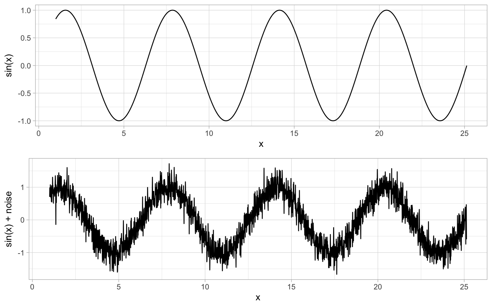
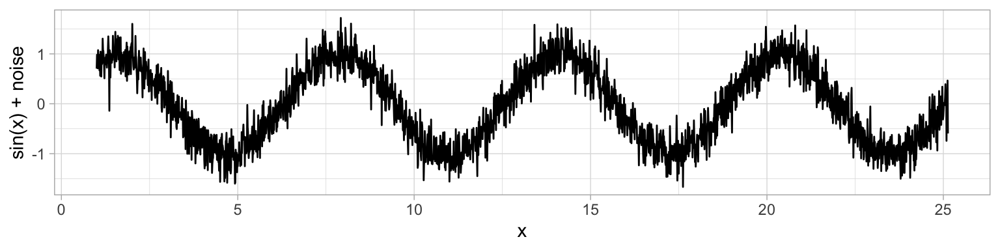
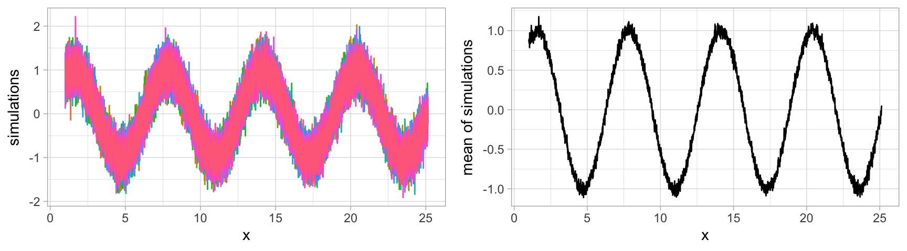
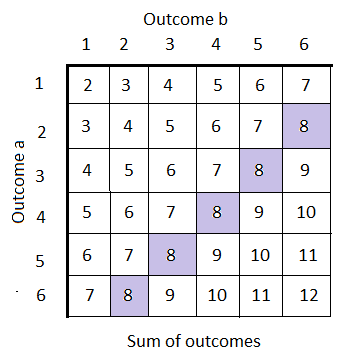
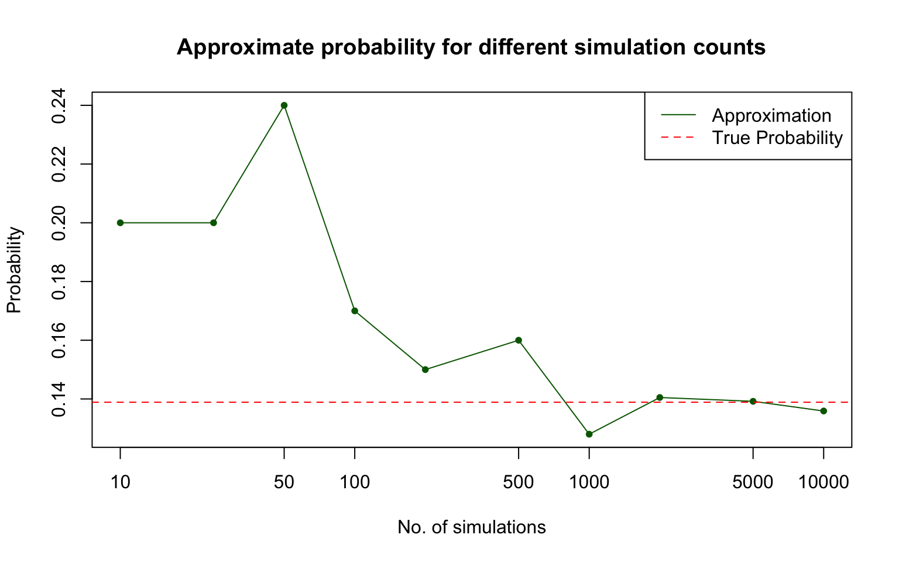
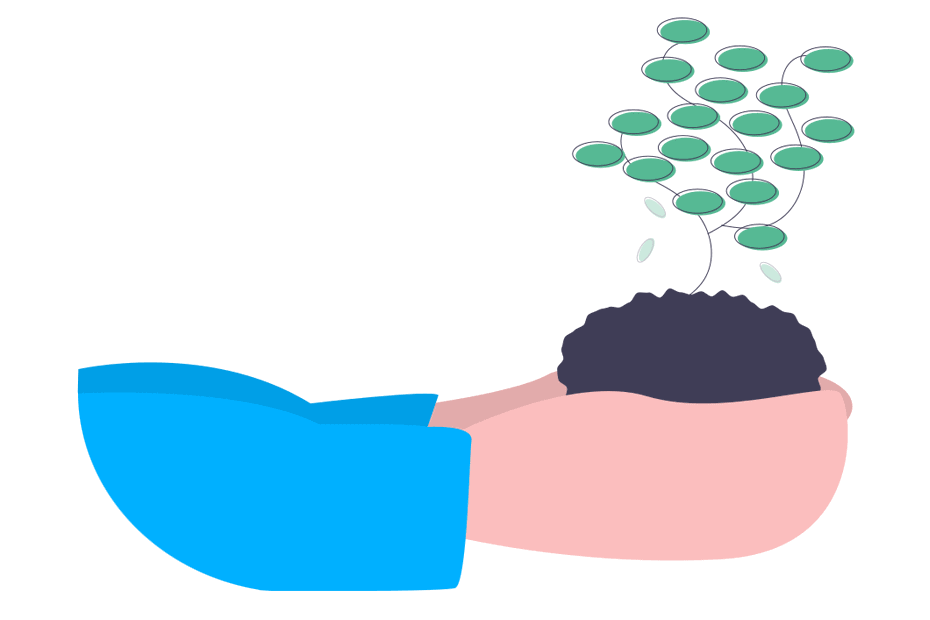

![]()

PSTAT 10 Data Science Principles
Lecture 9: Probability
September 1, 2026
Introduction
🔁 Review: Lecture 8
👈 Last lecture we were studying methods to describe and visualize real world data, including:
- Descriptive statistics:
- Location: Mean, Median, Mode
- Spread: Standard Deviation, Variance
- Relation: Correlation and Covariance
- Plotting:
- Histograms
- Scatter Plots
👀 Outline: Lectures 9 – 12
👇 This week we will be briefly stepping away from data science and focussing more on probability.
The next four lectures are relatively self-contained and will be broken down into the following subtopics:
- Introduction to Probability
- Discrete Random Variables
- Continuous Random Variables
- Monte Carlo Methods
Introduction to Probability
🎲 Probability Example
Very rarely in data science will our data show a perfectly clear relationship.
We typically assume that all data has two components: a deterministic component (i.e. some function we know exactly and so can predict exactly) and a random (noise) component.
🌊 Noisy Sin Curve
For example, consider you run an experiment and receive the following “noisy” sin curve.

How might we try to determine the true value?
🔁 Multiple Trials & Averaging
We run the experiment several times over and take the average after many trials! The higher the number of trials, the closer our average gets to the true value. This is an example of Monte-Carlo simulation.

🎲 A Simple Example
Consider rolling two dice. We wish to determine the probability that the sum of the two rolls is 8.

🎯 Probability
Probability
The probability of some discrete event \(A\) occurring is given by:
\[ \mathbb{P}(A) = \frac{\text{number of ways for event A to occur}}{\text{total number of possible outcomes}}. \]
In terms of our dice rolls:
- There are 5 ways to roll an 8 (2+6, 3+5, 4+4, 5+3 and 6+2);
- There are 36 possible outcomes (6×6);
- Therefore the probability of rolling an 8 is 5/36.
💪 Exercise — Coin Flips
02:00
Suppose that you flip three fair coins, that is for each coin
\[ \mathbb{P}(H)=\mathbb{P}(T)=\frac{1}{2}. \]
Determine the probability that you flip exactly one head by working through the following:
- Find the number of outcomes with exactly one head (the order is important, i.e. HTT is not the same as TTH).
- Find the total number of outcomes.
- Take the ratio.
- Now suppose you flip four fair coins instead. Determine the probability that you flip exactly three heads, following the same steps.
✅ Solution — Coin Flips
The number of outcomes with exactly one head is 3: \[\text{(HTT, THT, TTH)}\]
The total number of outcomes is 8: \[\text{(HHH, HHT, HTH, THH, HTT, THT, TTH, TTT)}\]
The ratio is therefore 3/8.
For four coins, the number of outcomes with exactly three heads is 4: \[\text{(HHHT, HHTH, HTHH, THHH)}\]
The total number of outcomes is \(2^4=16\), so the probability is \(4/16 = 1/4\).
- We list out the outcomes satisfying our event, being careful that order matters (HTT ≠ THT).
- We count all possible outcomes — with \(n\) coins there are \(2^n\) total outcomes.
- The probability is simply the ratio of these two counts.
🌌 Sample Spaces
Sample Space
The sample space is the set of all possible outcomes of the experiment. It is usually denoted by the capital Greek letter omega \(\Omega\).
From our previous examples we have:
- Coinflips: \[ \Omega:= \{\text{HHH, HHT, HTH, THH, HTT, THT, TTH, TTT}\} \]
- Sum of dice rolls: \[ \Omega:=\{2,3,4,5,6,7,8,9,10,11,12\} \]
Each of these examples is known as a discrete sample space.
🔀 Discrete vs Continuous Sample Spaces
Discrete Sample Space
A sample space is said to be discrete if it has finite (more specifically countable) possible outcomes, for example:
- Heads or tails of a coin flip
- Number of students in a class
Continuous Sample Space
If a sample space is not discrete it is said to be continuous, for example:
- Height or weight
- Time taken to complete a task
📌 Essentially, if the outcomes are values in some continuous interval(s) then the sample space is continuous.
💪 Exercise — Discrete vs Continuous Sample Spaces
03:00
For each of the following experiments determine the sample space, noting whether it is continuous or discrete.
- Uniformly at random selecting an integer between 1 and 12 inclusive.
- Uniformly at random selecting a number between 1 and 12 inclusive.
- Flipping a coin and rolling a 6-sided dice at the same time.
- Uniformly at random selecting an integer between 1 and 3 (inclusive) and an integer between 7 and 9 (inclusive).
✅ Solution — Discrete vs Continuous Sample Spaces
- \(\Omega:=\{1,2,3,4,5,6,7,8,9,10,11,12\}\) — Discrete
- \(\Omega := [1,12]\) — Continuous
- \(\Omega := \{H1, H2, ..., H6, T1, T2, ..., T6\}\) — Discrete
- \(\Omega := \{(1,7),(1,8),(1,9), ...,(3,7),(3,8),(3,9)\}\) — Discrete
- Selecting an integer always gives a countable (discrete) sample space, even if we list it as a range.
- Selecting any real number in an interval gives an uncountable (continuous) sample space.
- Combining two independent discrete experiments (e.g. coin + die, two integers) still gives a discrete sample space — just with paired outcomes.
Simulation
🧪 Simulation
Often times we are unable to determine the probability analytically due to reasons such as:
- We don’t know the number of ways an outcome can occur;
- We don’t know the full sample space; or
- Our outcome can occur too many ways to count.
In these cases we can accurately approximate the solution using simulation!
Intuition
If we repeat a random experiment many times and record whether an event happens on each repetition, then the proportion of repetitions where it happens gives us a good estimate of its probability.
Roll a die 6000 times and count how often a 4 comes up — you should see roughly 1000 of them, i.e. roughly \(1/6\) of trials, even though we never explicitly computed \(1/6\).
🎲 Example — Approximation
Think back to our dice rolling experiment. Assuming we cannot compute the probability, we look to set up a simulation to approximate it.
We begin by outlining the structure of the simulation:
- Computationally roll 2 six-sided dice (we will explore how to do this).
- Sum their values.
- Record
TRUEif their sum is 8 andFALSEotherwise. - Repeat the experiment a large
nnumber of times. - Count the number of true values
n_trueand compute the probability asn_true/nor equivalentlymean(n_true).
We haven’t seen the code yet, but here’s a preview of applying this same structure to our coin flip exercise from earlier, for a growing number of trials n:
n P(1 head in 3 flips) P(3 heads in 4 flips)
1 10 0.400 0.200
2 100 0.370 0.230
3 1000 0.394 0.228Notice how the approximations get closer to the true values (3/8 = 0.375 and 1/4 = 0.25) as n grows.
📖 Simulation Terminology
Experiment
An experiment is a repeatable process with random outcomes.
Event
An event is the set of all outcomes of an experiment satisfying a logical condition.
Probability
The probability of an event can be thought of as the proportion of TRUE outcomes divided by the total number of trials n as n approaches infinity.
📌 This is not a rigorous definition — it’s just a helpful, intuitive way to think about probability. Formally, probability is defined more abstractly as a measure: a function assigning a number to subsets of some abstract space, satisfying a small set of axioms. We won’t need this formal machinery in this course.
🎰 sample() Function
The sample() function is the key function for discrete probability calculation. It randomly draws elements from a set, and is exactly the tool we need to simulate experiments like coin flips and dice rolls.
Here the arguments are:
xis the set you sample from;sizeis the size of the sample you wish to take;replacespecifies whether you replace sampled items; andprobassigns different weights (probabilities) to different outcomes.
For example, to simulate a single roll of a fair six-sided die:
📌 Careful: if x is a single number n (not a vector), sample() treats it as shorthand for sample(1:n, ...). This is a common source of bugs when x is meant to represent a vector containing one value — always double check what x actually is!
🎰 sample() — Without Replacement
Let’s consider randomly sampling from animal types:
By default we sample without replacement, so each time we select an animal we can no longer choose it. We therefore cannot sample more than the size of the set:
[1] "lion" "gorilla" "elephant"Error in sample.int(length(x), size, replace, prob): cannot take a sample larger than the population when 'replace = FALSE'A few more examples of sampling without replacement:
[1] 44 37 43 46 13[1] "gorilla" "elephant" "crocodile" "gibbon" "lion" Setting size equal to the length of x is a handy way to randomly shuffle a vector.
🎰 sample() — With Replacement
If we specify to sample with replacement we can sample as much as we want.
We sample 1000 times from animals with replacement and inspect the count plot:
🎰 sample() — Probabilities
Notice that our last plot had (roughly) equal bar heights, since we are equally likely to select each animal.
If we are more likely to select certain animals we can specify the probabilities using the prob argument. prob takes a vector of weights, one per element of x (matched by position), giving the relative likelihood of selecting each item — the values must be non-negative, and R automatically rescales them to sum to 1. So prob = c(0.4, 0.3, 0.2, 0.05, 0.05) means we should select "lion" about 40% of the time, "elephant" about 30% of the time, and so on.
We again produce the count plot to see the impact this has on our sample.
🎰 sample() — Probabilities (Result)
- The bars are no longer roughly equal — they now reflect the probabilities we specified.
- The relative bar heights approximately match the
probweights, since our sample size (1000) is large.
🎲 Example — Approximation (Continued)
Returning to our example, you can use sample() to generate one dice roll. We then use a loop to approximate the probability:
sample(1:6, 1, replace = TRUE)
# function computing the probability
prob_dice_sum <- function(sims = 10000) {
count <- 0
for(i in seq_len(sims)) {
dsum <- sample(1:6, 1) + sample(1:6, 1)
if (dsum == 8) count <- count + 1
}
return(count / sims)
}
# compute probability example
prob_dice_sum(sims = 10000)[1] 2[1] 0.1363We can use exactly the same structure to code up the 3 heads in 4 flips case from earlier:
📈 Approximation Accuracy

🎯 Why Does This Work?
The Law of Large Numbers
What you’re seeing in the plot above is the Law of Large Numbers in action.
In plain terms: as you repeat a random experiment more times, the average of your results gets closer and closer to the true expected value or probability.
- With few trials (left side of the plot), the approximation is noisy and can be far from the true value.
- With many trials (right side of the plot), the noise averages out and the approximation settles down near the true value.
In short: more trials = less noise = a more reliable approximation.
📌 We’ll state this more formally (with a limit) in the next lecture after we have defined expectation — for now, the intuition is all we need.
🔁 Replicability
Often we would like our work to be replicated by others, and if we are using random generation then others might not generate the same results. To ensure replicability we need to set the seed!

- Without a fixed seed, every run of your code produces a different random sample — a classmate (or grader!) re-running your analysis would get different numbers than you did.
- Setting the seed means anyone who runs your code, anywhere, at any time, gets exactly the same results as you.
- This is essential for reproducible research — a cornerstone of good data science practice.
🌱 set.seed() Function
When you generate random numbers in R, they are not truly random but are generated using a deterministic algorithm.
The function set.seed() initializes the random number generator to a specific state, so the sequence of random numbers can be reproduced.
[1] 926[1] 926Importantly, set.seed() doesn’t just fix the next random number — it resets the entire sequence that follows:
[1] 926 6291 8060[1] 1174[1] 926 6291 8060Notice the first three draws are identical every time we call set.seed(84), while the 4th draw (without re-setting the seed) simply continues on from where the sequence left off.
💪 Exercise — Computing Probability
03:00
In our drawer we keep 6 black socks and 8 white socks. We remove 3 socks without replacement and wish to determine the probability that all of our socks are black.
- Using probabilistic methods, determine the probability.
- Think about selecting the socks one at a time and how the probability changes as we remove socks from the drawer.
- For the first draw, how many black socks out of the total number of socks.
- For the second draw, we already have one black sock, so how many black socks are left?
- Use the product rule to combine the probabilities of each draw.
✅ Solution — Computing Probability
The probability of selecting 3 black socks is given by:
\[ \frac{6}{14}\times\frac{5}{13}\times\frac{4}{12} = \frac{5}{91} = 0.05494505. \]
- Each fraction is the probability of drawing black given what’s already been removed — 6/14 for the first sock, then 5/13 (one fewer black, one fewer total), then 4/12.
- We multiply the fractions since we need all three draws to succeed, one after another.
- This is sampling without replacement, so the probabilities change at each step (unlike flipping coins).
💪 Exercise — Checking with Simulation
05:00
We will now check the solution using simulation.
- Define a vector
sock_drawerof 1’s (representing black socks) and 0’s (representing white socks). - Define a vector
socksrepresenting the results of 3 selections from the drawer (without replacement) — use thesample()function with argumentreplace = FALSE.
✅ Solution:
[1] 0.0577- We build
sock_drawerfrom 6 ones (black) and 8 zeros (white). - Each loop iteration draws 3 socks without replacement and checks if all three are black (
sum(socks) == 3). - Repeating 10000 times and dividing by 10000 gives an approximate probability, which closely matches our analytical answer of \(5/91\approx0.0549\).
♻️ replicate() Function
Why Avoid Loops?
- Loops are helpful and sometimes necessary, but they are also very computationally intensive and inefficient in R.
- We therefore try to minimize our use of loops, particularly when our iteration has no need for a loop index (like
iin aforloop) — as in all of our simulation examples so far!
The replicate() Function
The function replicate() simply replicates a task you set it, a specified number of times, and returns the results in an appropriate data structure. The general form is:
nis the number of times to repeat the task;expris the expression (code) you want repeated — typically a single random draw or simulation; andsimplify = "array"(the default) tells R to simplify the list of results into a vector, matrix, or array where possible, rather than returning a plain list.
♻️ Example — replicate() Function
First, let’s use replicate() to simulate 100 individual dice rolls — the expression sample(1:6, size = 1, replace = TRUE) (one dice roll) is repeated 100 times, and the results are simplified into a single vector:
Now let’s revisit our two-dice sum example. We replicate “roll two dice and sum them” 10000 times, storing every sum in dice_sum, then compute the proportion equal to 8 — no for loop required!
💪 Exercise — Eliminating Loops
03:00
Suppose you roll 2 fair dice. What is the probability that their product is greater than 15? Simulate with at least 10000 trials.
📌 Hint: use replicate() (not a for loop) to generate the 10000 products, and prod() to multiply the two rolled values together.
✅ Solution — Eliminating Loops
replicate()runsprod(sample(1:6, size = 2, replace = TRUE))10000 times, storing each dice product indice_prod.dice_prod > 15produces aTRUE/FALSEvector, andmean()of a logical vector gives the proportion ofTRUEs — exactly the probability we want.
📌 The true probability is \(11/36\approx 0.3056\).
Summary
✅ Topics Covered
🤔 Today we introduced ourselves to probability, specifically:
- Probability Definition
- Sample Spaces
- Simulation
sample()Functionreplicate()Function
📅 Next Class
🤩 Next class we will continue exploring probability by formally defining random variables and exploring some discrete probability distributions, including:
- Uniform Distributions
- Bernoulli Distributions
- Binomial Distributions
- Poisson Distributions